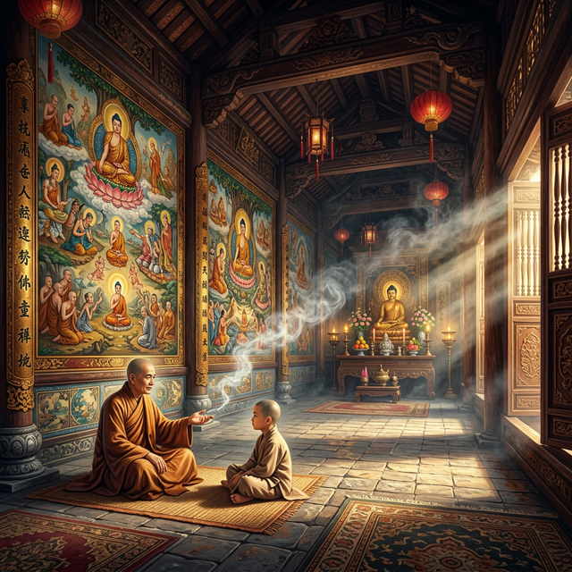
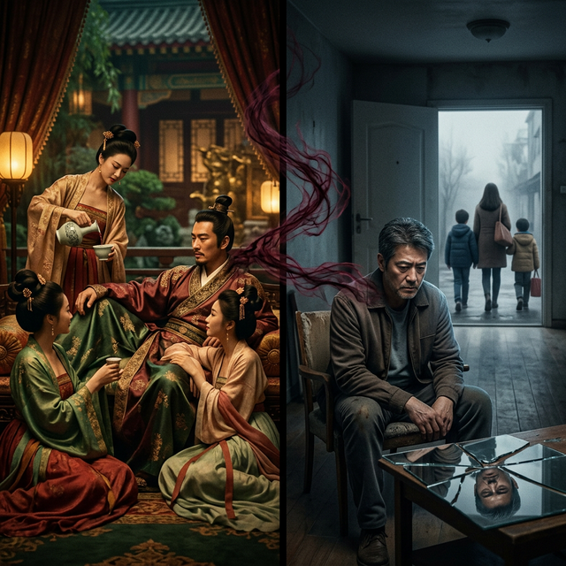
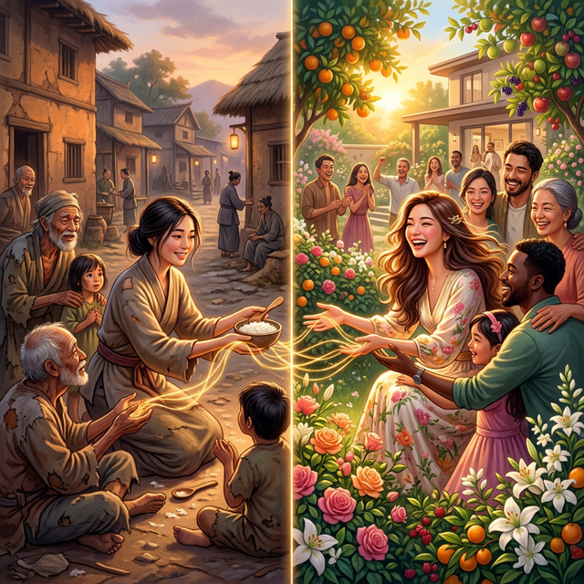
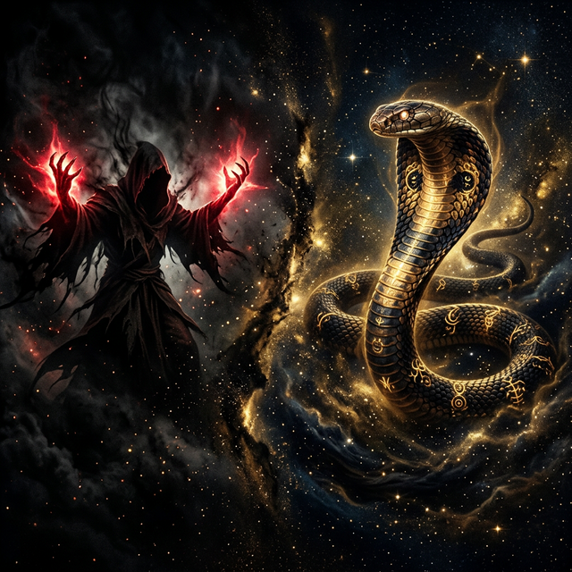
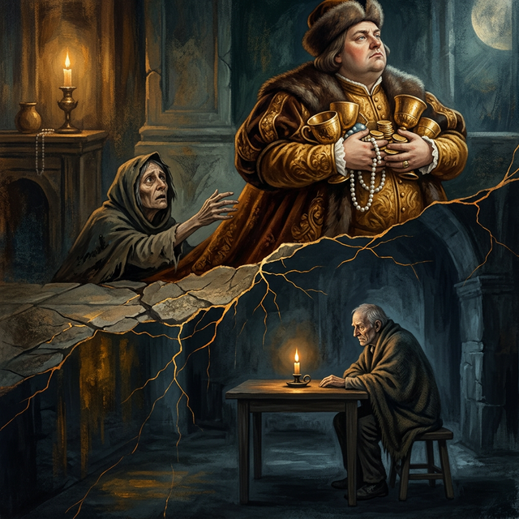
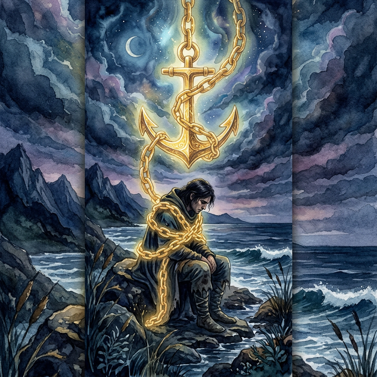
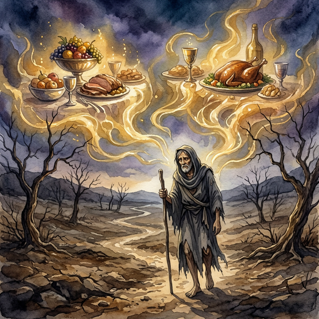
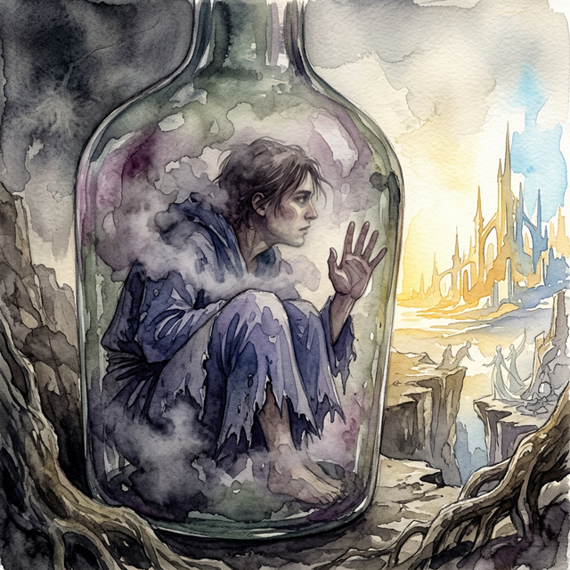

Librería del Karma The Karma Library

CAPÍTULO 0CHAPTER
0CAPITOLO 0第0章الفصل 0ГЛАВА 0KAPITEL
0CHAPITRE 0第0章CAPÍTULO 0
El DespertarThe AwakeningIl Risveglio觉醒الصحوةПробуждениеDas ErwachenL'Éveil目覚めO Despertar

CAPÍTULO ICHAPTER
ICAPITOLO I第I章الفصل IГЛАВА IKAPITEL
ICHAPITRE I第I章CAPÍTULO I
Fuerza FísicaPhysical StrengthForza Fisica体力القوة البدنيةФизическая силаPhysische KraftForce Physique体力Força Física

CAPÍTULO IICHAPTER
IICAPITOLO II第II章الفصل IIГЛАВА IIKAPITEL
IICHAPITRE II第II章CAPÍTULO II
Espejos RotosBroken MirrorsSpecchi Rotti破镜مرايا مكسورةРазбитые зеркалаZerbrochene SpiegelMiroirs Brisés割れた鏡Espelhos Quebrados

CAPÍTULO IIICHAPTER
IIICAPITOLO III第III章الفصل IIIГЛАВА IIIKAPITEL
IIICHAPITRE III第III章CAPÍTULO III
Siembra SilenciosaSilent SowingSemina Silenziosa默默播种بذر صامتТихий посевStilles SäenSemis Silencieux静かな種まきSemeadeira Silenciosa

CAPÍTULO IVCHAPTER
IVCAPITOLO IV第IV章الفصل IVГЛАВА IVKAPITEL
IVCHAPITRE IV第IV章CAPÍTULO IV
Hilo de la VidaThread of LifeFilo della Vita生命之线خيط الحياةНить жизниFaden des LebensFil de la Vie命の糸Fio da Vida

CAPÍTULO VCHAPTER
VCAPITOLO V第V章الفصل VГЛАВА VKAPITEL
VCHAPITRE V第V章CAPÍTULO V
Sombras MentalesMental ShadowsOmbre Mentali心理阴影ظلال عقليةМентальные тениMentale SchattenOmbres Mentales精神の影Sombras Mentais

CAPÍTULO VICHAPTER
VICAPITOLO VI第VI章الفصل VIГЛАВА VIKAPITEL
VICHAPITRE VI第VI章CAPÍTULO VI
Veneno DulceSweet PoisonDolce Veleno甜蜜的毒药ثعبان الروحСладкий ядSüßes GiftDoux Poison甘い毒Veneno Doce

CAPÍTULO VIICHAPTER
VIICAPITOLO VII第VII章الفصل VIIГЛАВА VIIKAPITEL
VIICHAPITRE VII第VII章CAPÍTULO VII
Manos del MalHands of EvilMani del Male邪恶之手أيدي الشرРуки злаHände des BösenMains du Mal悪の手Mãos do Mal

CAPÍTULO VIIICHAPTER
VIIICAPITOLO VIII第VIII章الفصل VIIIГЛАВА VIIIKAPITEL VIIICHAPITRE VIII第VIII章CAPÍTULO VIII
SoberbiaPrideSuperbia傲慢كبرياءГордыняHochmutOrgueil傲慢Soberba

CAPÍTULO IXCHAPTER
IXCAPITOLO IX第IX章الفصل IXГЛАВА IXKAPITEL
IXCHAPITRE IX第IX章CAPÍTULO IX
EgoísmoGreedEgoismo自私أنانيةЭгоизмEgoismusÉgoïsme利己主義Egoísmo

CAPÍTULO XCHAPTER
XCAPITOLO X第X章الفصل XГЛАВА XKAPITEL
XCHAPITRE X第X章CAPÍTULO X
InfiernoHellInferno地狱جحيمАдHölleEnfer地獄Inferno

CAPÍTULO XICHAPTER
XICAPITOLO XI第XI章الفصل XIГЛАВА XIKAPITEL
XICHAPITRE XI第XI章CAPÍTULO XI
DesprecioContemptDisprezzo蔑视احتقارПрезрениеVerachtungMépris軽蔑Desprezo

CAPÍTULO XIICHAPTER
XIICAPITOLO XII第XII章الفصل XIIГЛАВА XIIKAPITEL
XIICHAPITRE XII第XII章CAPÍTULO XII
InjusticiaInjusticeIngiustizia不公ظلمНесправедливостьUngerechtigkeitInjustice不正Injustiça

CAPÍTULO XIIICHAPTER XIIICAPITOLO XIII第XIII章الفصل
XIIIГЛАВА XIIIKAPITEL
XIIICHAPITRE XIII第XIII章CAPÍTULO XIII
El Rostro del AmorThe Face of LoveIl volto dell'amore爱的面容وجه الحبЛицо любвиDas Gesicht der LiebeLe visage de l'amour愛の顔A Face do Amor

CAPÍTULO XIVCHAPTER XIVCAPITOLO XIV第XIV章الفصل
XIVГЛАВА XIVKAPITEL XIVCHAPITRE XIV第XIV章CAPÍTULO
XIV
La Deuda InvisibleThe Invisible DebtIl debito invisibile隐形债务الديون غير المرئيةНевидимый долгDie unsichtbare SchuldLa dette invisible見えない借金A dívida invisível

CAPÍTULO XVCHAPTER XVCAPITOLO XV第XV章الفصل
XVГЛАВА XVKAPITEL XVCHAPITRE XV第XV章CAPÍTULO
XV
El Plato VacíoThe Empty PlateIl piatto vuoto空盘子اللوحة الفارغةПустая тарелкаDer leere TellerL'assiette vide空の皿O Prato Vazio

CAPÍTULO XVICHAPTER XVICAPITOLO XVI第XVI章الفصل
XVIГЛАВА XVIKAPITEL XVICHAPITRE XVI第XVI章CAPÍTULO
XVI
La Ceguera AutoimpuestaSelf-Imposed BlindnessCecità autoimposta自我失明العمى المفروض ذاتياДобровольная слепотаSelbst auferlegte BlindheitCécité auto-imposée自ら選んだ失明Cegueira autoimposta

CAPÍTULO XVIICHAPTER XVIICAPITOLO XVII第XVII章الفصل
XVIIГЛАВА XVIIKAPITEL
XVIICHAPITRE XVII第XVII章CAPÍTULO XVII
El Cordón CortadoThe Cut CordIl cordone tagliato被割断的绳子الحبل المقطوعРазрезанный шнурDie durchtrennte SchnurLe cordon coupéカットされたコードO cordão cortado

CAPÍTULO XVIIICHAPTER XVIIICAPITOLO XVIII第XVIII章الفصل XVIIIГЛАВА XVIIIKAPITEL XVIIICHAPITRE XVIII第XVIII章CAPÍTULO XVIII